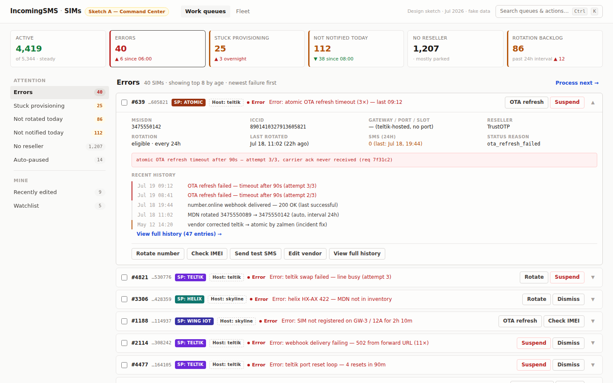
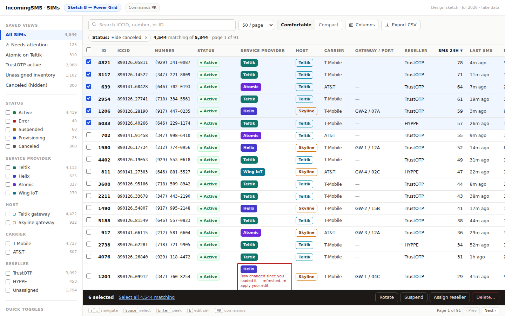
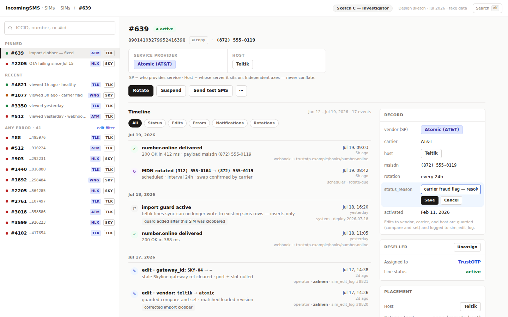

IncomingSMS · Sims Management v2 — design sketches
Three information architectures, same data and actions. Jul 2026 · fake data · not deployed.

Sketch A — Command Centerrecommended home
The day starts with "what needs me", not 5,344 rows. Health strip → attention queues (errors, stuck provisioning, not notified…) → each item shows the reason it's here plus recommended actions. Process-next triage, CAS edit confirm, undo toast, command palette.
{kind=link}

Sketch B — Power Grid
Spreadsheet workbench: saved views + facet counts on the left, dense sortable grid, inline compare-and-set cell editing with a live 409-conflict state, selection scope + dry-run bulk preview, typed bulk delete, keyboard-first.
{kind=link}

Sketch C — Investigatorrecommended record view
Built around the SIM #639 clobber story: search-first master list, dossier with service-provider vs host provenance block, unified filterable timeline (status · edits · errors · notifications · rotations), guarded type-to-confirm corrections logged to sim_edit_log.
{kind=link}
Docs: DESIGN.md (personas · JTBD · journey map · principles · double diamond) · README.md (comparison · recommendation · phased test-env plan)